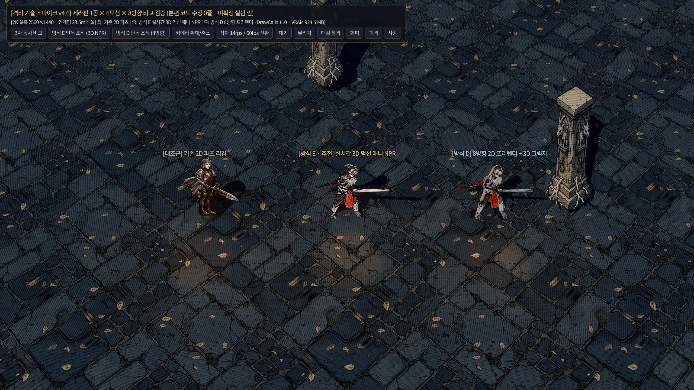
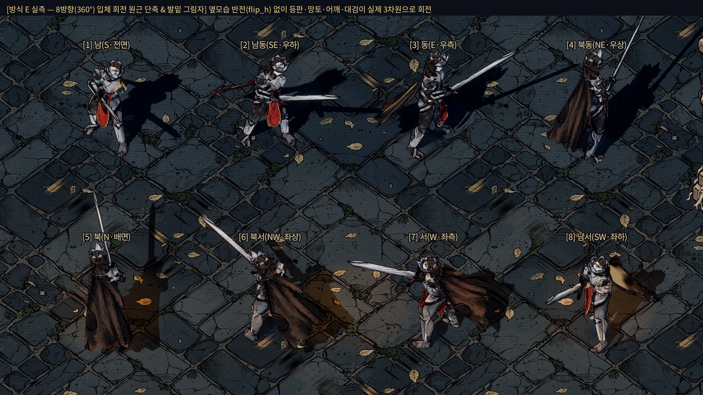

하운즈 오브 애버리스 — 정석 프리렌더 D+ × 시안 I (칠흑 통먹물 × 황금 광재 금박 맥) 격리 검증
본 빌드는 본편 게임(v5.2.3)을 0바이트도 건드리지 않고 격리 씬(
res://lookdev/char_pipeline_spike.tscn)에서 디렉터님이 선택하신 ① 정석 프리렌더 D+ (840프레임 25~32fps 고밀도 · 여백 절삭 BC7 압축 · 실시간 Skeleton3D 0개 · 캐릭터당 4 tris · 60Hz 판정 분리)와 ② 시안 I (칠흑 통먹물 × 황금 광재 금박 맥 + 순수 2D 액션 FX)를 실측 검증하기 위한 설치파일입니다. 디렉터 최종 승인(PR-6) 후 고유 고딕 조형 고도화와 함께 본편 전 캐릭터·몬스터로 통합됩니다.
SHA-256: 0d271c2c7bf7eca8ab6ec5a51ed76e323635e337756a19902f0b5e8b7a187b0c (미서명 인디 테스트 빌드이므로 SmartScreen 창 노출 시 [추가 정보] → [실행] 선택)
스파이크 뷰어 조작: 마우스 좌클릭/드래그(360° 이동·근접 자동 참격) · Q(수동 대검 참격 + 순수 2D 통먹물·용융 금박 검기) · Space(전술 회피 캔슬 + 접지 먹연기) · [검수 전용 키: W=피격 반응 · E=사망/복귀] · 상단 버튼으로 [① 실전 타격 아레나(D+) / ② 3자 동시 비교 / ③ 25인 동시 교전 저사양 부하 실측(100 tris) / ④ 방식 E 단독] 즉시 체험 가능.
1. 인게임 2K(2560×1440 · 실제 플레이 23.5m 배율) 3자 동시 비교
좌: 기존 2D 파츠 리깅 vs 중: [정석 D+ × 시안 I] BC7 프리렌더(4 tris · Skeleton3D 0개 · 칠흑 통먹물 × 황금 광재 금박 맥) vs 우: 방식 E 실시간 3D(32.3k tris)

2. 근접 2.4배 검수 & PR-5 실전 타격 슬라이스 (순수 2D 통먹물·용융 금박·동맥혈 검기 & 타격 스파크)
상단: 시안 I 칠흑 명암 블록·무광 백랍·황금 금박 맥 및 발밑 0.00mm 이중 먹물 그림자 | 하단: 광재 봉인 철갑 사냥개 표적 참격 적중 순간

3. [정석 D+ × 시안 I] 8방향 프리렌더 스프라이트 턴어라운드 시트
camera.unproject_position ±5° 히스테리시스 8방향 양자화 · 여백 절삭 발 접지 오차 0.00mm · 전 방향 황금 금박 맥 가독성

4. [정석 D+ × 시안 I] 6대 모션(25~32fps 고밀도) + 분리형 2D FX 3종 & 25인 동시 교전 저사양 부하 실측
상단: 대기·달리기·참격(+검기)·회피(+접지 먹연기)·피격(+타격 스파크)·사망 | 하단: 세라핀 25기 + 순수 2D 검기 동시 출격(캐릭터 합산 단 100 tris · 실시간 Skeleton3D 0개 · 총 7,732 Prims)

5. 여백 절삭 + 6px 패딩 BPTC/BC7 압축 아틀라스 & 순수 2D 액션 FX 시트 원본 검수
총 840프레임 고밀도 샘플링: 무절삭 비압축 840.0 MiB → 여백 절삭 BC7 하드웨어 압축 54.3 MiB (15.46배 절감 · 테두리 잘림 0px · 인접 셀 번짐 0px)